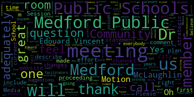
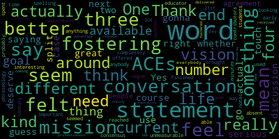

AI-generated transcript of STRATEGIC PLAN ROUNDTABLES
English | español | português | 中国人 | kreyol ayisyen | tiếng việt | ខ្មែរ | русский | عربي | 한국인
Back to all transcripts
[Lungo-Koehn]: in the general guidelines for remote participation by members of the public and or parties with the right and or requirement to attend this meeting can be found on the city of Medford website www.medfordma.org. For this meeting members of the public who wish to listen or watch the meeting may do so by accessing the meeting link contained herein. No in-person attendance members of the public will be permitted. but every effort will be made to ensure that the public can adequately access the proceedings in real time via technological means. In the event that we aren't able to do so despite best efforts, we will post on the City of Medford or Medford Community Media websites and audio or video recording transcript or other comprehensive record of proceeding as soon as possible after the meeting. The meeting can be viewed through Medford Community Media on Comcast channel 22, Verizon channel 43 at 5 p.m. Medford Public Schools is inviting you to a scheduled Zoom meeting. You can call in by using 1-929-205-6099. Please enter meeting ID 912-2512-8810 when prompted. Additionally, questions or comments can be submitted during the meeting by emailing medfordsc at medford.k12.ma.us. Those submitting must include the following information, your first and last name, your Medford street address, your question or comment. Session one strategic plan round table. The school committee is hosting these sessions to collaborate and share ideas that will help inform potential revisions to be made to the Medford Public Schools strategic plan. Discussions will include, does Medford Public Schools current mission statement adequately describe the long range goals you feel Medford Public Schools should aspire to? Why or why not? What changes or suggestions do you have? Does MPS current vision statement adequately describe what you feel Medford Public Schools should achieve in the next X amount of years? Why or why not? What input changes or suggestions do you have? Also, what key actions does Medford Public Schools need to take to demonstrate forward progress towards our vision in so many years and in what timeframe? Signed Dr. Marice Edouard-Vincent, Superintendent of the Medford Public Schools. Welcome, everybody. I believe we're going to have facilitators and note takers in each room. And I'm sure Dr. Cushing is going to put us into rooms accordingly.
[Van der Kloot]: Are we going to have an initial introduction?
[Lungo-Koehn]: Other than a roll call by member McLaughlin, I don't see that listed. But that's up to all of us.
[McLaughlin]: It looks like the superintendent's trying to unmute.
[Cushing]: Let me make her call, I'm sorry.
[Lungo-Koehn]: All set. Dr. Edwards-Benton, you should be set.
[Edouard-Vincent]: Good evening, everyone. This evening, we're joining today for our roundtables. I'm sorry I have it on two devices. Just give me a moment. I wanted to just give a breakout for today's sessions. We will be having an elementary school session, a middle school session, high school, and a special education session, and four language groups. Those language groups are Portuguese, Haitian Creole, Arabic, and Spanish. In each language group, we will have specific translators who will support those groups. So for Portuguese, we have Genevieve Young. For Haitian Creole, we have Mr. Raul Bonbon. For Arabic, we have Mai Abusan. And for Spanish, we have Mr. Paul Textera, who will be supporting us.
[Lungo-Koehn]: Oh, you're freezing. Facilitators. We missed that, Dr. Edouard-Vincent, you froze. After you announced all four interpreters. Oh, frozen again.
[Edouard-Vincent]: Can you hear me? Now we can. Okay. Were people able to hear the four language groups or?
[Lungo-Koehn]: Yes, you got cut off right after that.
[Edouard-Vincent]: Okay, for elementary, we have member Graham and Mayor Lungo-Koehn, with Ms. Suzanne Galusi supporting the elementary group. For middle school, we have Ms. member Rousseau and member Mustone, with Dr. Riccadeli supporting middle schools. For high school, we have member Krutz and member Van der Kloot with Dr. Cushing supporting high school. And for special education today, we have member McLaughlin and Ms. Susanna Campbell, who will be supporting special education. So those will be the eight respective groups, and we will be focusing in on the three questions related to vision and mission. And I just wanted to say that all of this work that's happening today was birthed out of the work for the strategic planning and communication subcommittee group, which is chaired by member Graham. But this today's roundtable convening is to push those conversations about the mission and vision and have members of the community be able to weigh in on the strategic planning work that we have been doing and the full participation of the entire school committee group. So I look forward to today's session and I wanna thank all the administrators that have signed up to be scribes and timekeepers to support all of the respective groups today. So I just want to thank them in advance as well. Thank you, Mayor Lungo-Koehn.
[Lungo-Koehn]: Thank you, Dr. Edward-Vincent.
[Cushing]: All right, ladies and gentlemen, I have assigned, I believe, all of the appropriate people for our groups, meaning our translators as well as our scribes and facilitators and school committee members to the groups. I'm gonna open the rooms now for the parents and other people on the call. You should be able to, if you have the most up-to-date or recent update to Zoom, you should be able to self-select into the rooms once I open the rooms, all right?
[Teixeira]: Yes. Could the interpreters introduce themselves and tell them which room they're going to?
[Cushing]: Yes, that would be awesome, and thank you very much for that hiccup.
[Lungo-Koehn]: Mr. Teixeira, if you want to go first, which room will you be in? And you are?
[Teixeira]: Dr. Cushing, what room will I be in?
[Cushing]: You will be in the Spanish room, which I think is room eight.
[SPEAKER_17]: Eight, OK. Buenas noches. Si alguien necesita interpretacion en espanol, elija numero ocho. May?
[SPEAKER_10]: Dr. Cushing, do you have an idea what room am I going to be in? It will be Arabic room seven. Mr. Bonbon, you're muted.
[SPEAKER_03]: Where's the room number I'll be in? Room six. Okay. I apologize. Oh, go ahead. Dr. Cushing. Nope. You're good. And it's room five. It's room five for Portuguese.
[SPEAKER_08]: Thank you, Ms. Young. Thank you, Dr. Cushing. All right, rooms are opening now. Can I also ask, may I ask a question?
[McLaughlin]: Yes, Member McLaughlin. Thank you. Can we also just keep a record of how many people are in each of the rooms in terms of respondents for all of the different divisions so we know what kind of demographics we're getting?
[SPEAKER_03]: Sounds good.
[McLaughlin]: Thank you.
[SPEAKER_00]: I don't seem to be able to pick a room. I'm not finding that I can do that. I'm in elementary school.
[Cushing]: Sarah, you'd like to go to elementary? You got it?
[SPEAKER_00]: Thank you. I can't either, Peter. Diane Guarino, I can't get in either.
[Cushing]: All right, Diane, we'll get you in there in a second.
[SPEAKER_00]: Thank you so much. Hi, this is Teresa Fernald. Can you please move me to the elementary room?
[Cushing]: Sure. I'm going to start with Sarah Cohen. Actually, I'm going to start with Diane Guarino.
[SPEAKER_00]: Thank you.
[Cushing]: Elementary, right, Diane?
[SPEAKER_00]: Yes, please. I'm the timekeeper.
[Cushing]: Sarah Elementary, you are going right now.
[McLaughlin]: And Roger Cashman needs to go to middle school. I also can't choose, please.
[Cushing]: All right, you got it, Roger. Mr. Polk, I'm going to send you to high school. Farzner.
[SPEAKER_10]: Maria Dorsey to the high school.
[Cushing]: Maria Dorsey, you got it. And Teresa. Fernald. So Fernald, where would you like to go? I'm sorry.
[SPEAKER_00]: Elementary, please.
[Cushing]: Yes. Have a great day. Thanks. Jackie.
[SPEAKER_08]: What number is middle school, please? Could you put me there?
[Cushing]: Thank you.
[SPEAKER_08]: Thank you.
[Cushing]: And Farzner. Mr. Bloch, you're back, Bernadette, you're back.
[SPEAKER_07]: So Lisa Evangelista was already there as a scribe. Is there another spot where you'd like me to go or should I join up? Anything's fine.
[Edouard-Vincent]: Mr. Bloch, would you mind going to room four?
[SPEAKER_07]: Yeah, no problem. Thank you.
[Ricciardelli]: No, I was just checking just to see if everyone was placed and it looks like they probably were. All right, so I'm going to head back. If I leave, will that put me back in the same room, or Peter, do you have to put me back?
[Cushing]: No, you're already there. So I think if you click the breakout rooms down on the bottom, it should go.
[Ricciardelli]: Got it. Peter, am I in a room?
[Cushing]: Susie, you are not assigned yet.
[Ricciardelli]: OK.
[Cushing]: Where would you like to go?
[Edouard-Vincent]: Oh, wherever you need a scribe. I believe it's room one.
[SPEAKER_07]: So Craig is Craig's in the room number four. So I'm going to join up room number two middle if that's fine with everyone. There's no scribe. Okay, thanks. All right.
[Cushing]: So I think Farsner is actually in a room elsewhere under another account. Just so you're aware.
[Murphy]: could we put the fires that's here in that room as well?
[Cushing]: I have a sign, but I think they have to click on their end as well.
[Edouard-Vincent]: Mr. Murphy, what room would you like to be assigned to?
[SPEAKER_15]: Well, I'm a little curious, like what have I not done? Peter did not have the button just at the bottom of the screen.
[Cushing]: You probably just need to update your Zoom that's downloaded on your desktop to the most recent version. All right. And to just re-download Zoom? Yeah. OK. If you go into your settings, it might say, like, update. I, myself, haven't done it on one of my computers, so.
[Murphy]: OK. Can you throw me in the middle school for the time being? I'm, like, working on something else at the same time, but I'll listen to it as closely as I can.
[Cushing]: You got it.
[Murphy]: Thanks a lot.
[Cushing]: Dr. Vincent, where would you like to go?
[Edouard-Vincent]: I know I have access to the ones I just was checking to see where I should go support. So I will. I'm going to just move into one of the rooms right now.
[Cushing]: And I'm going to high school.
[Edouard-Vincent]: Okay.
[Cushing]: Hello Pixel 3 and Stephanie McCann. We have multiple rooms open right now. Elementary, middle school, high school, special education, as well as some rooms for translation. Do you have a preference for which room you would like to go into?
[Graham]: High school.
[Cushing]: And you're good to go. And pixel three are you there. pixel three. All right, I'll be back in a few minutes to check. I apologize if you have to wait. Oh, they're gone. All right. All right, my kids.
[Edouard-Vincent]: So good afternoon. I hope all groups were able to come back in. I was able to jump into every room for a little bit of time. There were wonderful conversations, rich topics that were being shared. And at this point in time, we really would like to just give the different groupings an opportunity to share. Some groups were able to, come up with draft versions of draft revisions that they want to be able to share out and I think it'll be a rich experience for all of us to be able to listen to the feedback from our different groups. I did not go into all of our groupings just yet, but I just wanted to be able to take this opportunity to hear a little bit from each group. And so I'm going to ask I'm going to have us start with special education. If special education member McLaughlin's group could just report out, give us an overview. We have about 24 minutes. So I'm going to try to do three minutes per group and see if you can share out you know, a key highlight or a suggestion that your particular group had to support this work around mission and vision statements. Member McLaughlin.
[McLaughlin]: Sure, thank you. So we talked a lot about sort of, you know, in the sort of language of IEP actually, what are the measurable benchmarks, current performance level, right? So, you know, knowing what our current performance level is, you know, based on this mission and vision, and we expect to go with measurable benchmarks and how the data is actually going to demonstrate that was a big part of our conversation. and having some more specificity around, you know, what sort of some of these, how do you define, you know, what it means to be successful in the 21st century, you know, and also that we're sort of thinking about when we say all students, what does that mean? You know, students regardless of ability, background, ethnicity, et cetera. So being more specific in the wording. And then we talked a lot about the partnerships that we've really appreciated in this past year with the pandemic and being able to see what's actually happening in schools and teachers really relying on parents and vice versa and us being able to appreciate what they're doing and be included in what our children are learning has been really valuable. Is there anything anyone else from the group would like to add?
[Lungo-Koehn]: Great, great job member McLaughlin. Up next.
[Edouard-Vincent]: High school had a draft. I don't know if you can screen share that, but I would like for the group to see the possible draft that was shared with some different wording and just do high school, middle, and then elementary has a lot of suggestions as well for the group.
[D'Alleva]: Dr. Cushing, you might have the chat.
[Cushing]: I did not see a member band includes version member band include put that in the chat.
[Van der Kloot]: Let me, I put it in the chat, but I think it said, Medford Public Schools provide safe and equitable learning environments that fosters academic success, personal growth, positive relationships, civic responsibility, adaptability and resiliency for all our students. A lot of our conversation was about, there was nothing wrong with the vision statement as written, but it was, you know, tended towards to be too encompassing. Now, a lot of our discussion really was, we really liked one from Boston, Paul, every student, every day.
[D'Alleva]: Yeah.
[Van der Kloot]: You know.
[D'Alleva]: We should know that one from BPS, but I think we were looking for that, that taking our mission statement and sort of making it into that catchphrase so that even if you're a new community member, you know, For example, Boston Public Schools, every student, every day, which means like, we're here for our students every single day, no matter what the timeframe is, whatever they need. So even parsing that down, so that's like our catch layer. I even said, Maurice, too, like in your emails, you always write, in partnership with children. So those kinds of things we need to kind of whittle down a little bit so we have our, Medford Public Schools catchphrase that we can all utilize.
[Van der Kloot]: So the one that I read, what we were really talking about is what key phrases came up. And we had a discussion about how important the school environment, how it had become clear this year that the school environment was so important in nurturing our kids. And we talked about equity, and we talked about adaptability and resilience. So we were just trying to incorporate some of those key concepts, I think. But, you know, the shorter the better in so many ways.
[Edouard-Vincent]: Thank you. Thank you so much. Thank you for that I when I when I saw the. you know, how you worded it. And when we get to elementary, member Graham will be able to, you know, kind of report out. But one of the things I know specifically calling out critical thinkers or social emotional learning, different pieces like that, but to look at what we have and what your group worked on. And right now we're gonna just, if it's okay, member Graham, unless another member of the group wants to speak, I was gonna quickly transition to member Rousseau. to report out on middle schools, but I really appreciate just, you know, the creative thinking, the ideas, the suggestions, so that we're able to, you know, take all of this information and really work it into something that's relevant to everyone today in 2021. Thank you.
[Ruseau]: So I'll go next then, I guess, right? Is that what you were saying? Yes. Thank you. So we had a great conversation, of course. We had a few things that I'm gonna touch on. There was a serious discussion around whether the mission and the vision statements deserve to be split, that there's an actual different use case for the two different statements. And there were a number of people seem to be in agreement with that. Some of the ACEs do not seem to actually, they seem to be completely absent from the current statement. There's only four aces, so it feels like we should be able to get all four of them in some way into the mission or the vision or both. We, a number of us, we had interesting conversation around 21st century education, and there seemed to be a consensus, I would say, that spelling out what we mean by that is important. Again, we don't need a 700 word mission statement, but that that, that phraseology doesn't really mean anything to anybody who isn't an educator and hasn't spent any time looking it up. And then we had three words in the current statement, which I think it was just three, that need more conversation. One was the word contributors. Another one was reached, which felt very kind of like you're finished. It's very like end of life, not early in life where our students are. And then the word fostering in the ACEs feels very unmeasurable and vague. So I have a lot of other notes, but I'll, I probably used my three minutes. So thank you.
[Edouard-Vincent]: Could I ask a question, member Rousseau? When you said fostering felt vague, was there another word that your group said they felt would better capture the feeling? Just so I can report that.
[Ruseau]: There was not a better word. It felt, I brought this thing up, but it was, we could say we offered something, but that doesn't mean it's really available to everybody. So fostering, at the end of the day, literally nobody could take advantage of something. And if we fostered that, the goal isn't to say we as the professionals made something available, it's that it actually was delivered or received. And so I don't think we had a better word. I don't remember a better word coming up, but that word fostering felt a very kind of, it didn't feel like we were taking responsibility for delivering on the goal.
[Edouard-Vincent]: Thank you. Thank you for that clarification. That's very helpful as we go back to the drawing board. Was there anyone else from the middle school team that wanted to speak? Okay, thank you. I'm gonna pass now to member Graham for her to speak with the elementary school on behalf of the elementary school group. And then we will go to the language specific groups after that. So member Graham.
[Graham]: So we actually had a good conversation about a number of things. So I think, you know, overwhelmingly the participants in our group. Had a lot of passion at the elementary school level around making the after school programming more available to all those families who need it. And actually, I thought one person. sort of said that, you know, I'll sort of know we're making progress when, as a working parent, I can send my child to NPS and they can have after-school care. That is what, like, being able to access any of this statement means to me, which I thought was really compelling. We did talk a lot about the 21st century comment being really abstract, and we went on to talk about the notion of wanting to ensure that we are creating critical thinkers, which is really sort of, I think we're at the beginning of that either success or failure really being very evident in our society. So being able to understand what is real, what is not, how to really critically think about the world around you, When people are being truthful or frankly they're not, which is I think the really scary part of like looking forward for me anyway. And they also we also talked about the fact that the education that we provide itself needs to be drawn from a diverse set of skills and backgrounds and I think that really taps into. thoughts for me anyway about ensuring that our curricula are up to date and are rigorous and can be accessed by all of our students, but also that they are reflecting our current knowledge and thinking across the world and across the profession. So I thought that was all like really, really good commentary. I thought a couple of other things that came up a couple of times is that, There was an overwhelming comment about the plan feeling sort of incomplete at the moment. So just trying to kind of connect the dots of all the components and the one pager and like what that really looks like as it comes to life and a lot of questions around that. And then I think the other conversation that we had that I thought was really excellent was around how do we measure that we're making progress and in sort of on the like contrasting side of measurement a feeling that just because it can't be quantified doesn't mean it should uh not be prioritized so in other words there's a lot of things that are very hard to measure about what we do in public school systems and just because we can't put a number to it doesn't mean it doesn't deserve prioritization so that we really have our work cut out for us as we as we think about how to critically evaluate things that are quantifiable and things that are not quantifiable and be able to prioritize across that set of topics. And then I think the other comment that I heard, which I think is important is, you know, we haven't ever had meetings like this, you know, pre a year ago, and that Zoom has really enabled us in a different way than we were able to take advantage of before. And, you know, certainly when you talk about the number of working parents, whether they're on the call tonight, or they come to our meetings, that that was a pretty important thing. And then I think that was it. I think that those were like the biggest things. Did I miss anything, Mayor?
[Lungo-Koehn]: You covered everything very well. Maybe just the one thing I thought would be a great addition is somebody, I think Ms. Cohen mentioned when you talk about school, family and community as it relates to meetings and the word engage or engagement. is, I think, important because we want to keep people engaged. But otherwise, you covered it perfectly.
[Edouard-Vincent]: Thank you for that. I actually had one probing question I was going to ask member Graham when I was just jotting a few notes when you were talking about how we're measuring progress and things that are quantifiable and things that are not. I didn't know, because I may have left that room at the time, if you had a concrete example of something that was quantifiable and something that was not, just so that we could continue to work on that.
[Graham]: We actually didn't get that far. We ran out of time. But the thing that immediately sort of came to my mind is this notion of, you know, with MCAS, you can measure. You have numbers. It's really easy to prioritize things that get tied to numbers. And in contrast, something like the fine arts that don't attach themselves to an MCAS score so directly and like really figuring out how do you weigh the balance of math and fine arts is I think an example that sort of my wheels started turning as we were talking about it.
[Edouard-Vincent]: Thank you for that clarification. That's a great example to help us, you know, just think about, cause I wanted to at least be able to bring that back to the larger group. Thank you. Mayor, I see member McLaughlin has her hand up. Member McLaughlin.
[McLaughlin]: Thank you. Yeah, just regarding the data, which is also what the special education subgroup was saying is that, you know, the quantifiable piece is also, you know, again, you could say MCAS scores, but also getting back to that all students, how are we disaggregating the data by subgroups, right? So if we're looking at, you know, how all students are doing, if we're looking at quantifiable data, how are we doing that around subgroups and reporting that out so that we're thinking about all students? Thank you.
[Edouard-Vincent]: Thank you. Thank you, ma'am McLaughlin as well. Mary, I wanted to say I did just communicate with Mr. Texera and for today's session, we did not have EL participation in the language groups, but tomorrow, again, is another opportunity from 6 to 7.30 p.m. for families to be able to jump on and give us another opportunity to have this conversation so that we can gather the data and information and feedback in order to work on, you know, having this living, breathing strategic plan that will continue to help us guide the work that we're doing. We're doing the work and member Graham, you did a great job explaining it in the elementary group, just about why, the why behind a strategic plan and how it really allows a district to have all of their work, kind of the work that's pushing us and moving us forward housed in one place. And it's a critically important document for us to have. And it was a requirement of the new superintendent's induction program. And so it is something that we look forward to finalizing. But even as we say, finalizing that document, it's a living, breathing document. And so it's never in its final phases. It can kind of continue to change and grow and evolve. So I wanna just thank all the parents who are on the call today to give their feedback and share their concerns, share their feedback, give us information so that we can take it, bring it back to the larger group and work on making revisions and improving our strategic plan. So I just want to thank everyone who's on the call tonight. Thank you.
[Lungo-Koehn]: Thank you, Dr. Edouard-Vincent, and thank you all for joining us. Is there a motion?
[McLaughlin]: Mayor, actually, I was pointing, we did not end up doing the roll at the beginning, so I didn't know if you wanted to do that now. Please. Member Graham. Here. Member Kreatz. Here. Member McLaughlin, present. Member Mustone.
[Lungo-Koehn]: I don't believe she's with us tonight.
[McLaughlin]: Member Ruseau. Yes, here. Member Van der Kloot. Present.
[Lungo-Koehn]: And I'm present, so that's six present. Oh, sorry, Mayor. And one absent. Again, thank you all for joining us. Tomorrow's will be actually 6 to 7.30, a little bit different time. So 6 to 7 30, same three questions. Please feel free to join us again. I'm sure we'll have additional guardians and parents, but thank you. Have a great night, everybody.
[McLaughlin]: Motion to adjourn.
[Lungo-Koehn]: Motion to adjourn by Member McLaughlin. Roll call.
[McLaughlin]: Member Graham. Yes. Member Kreatz. Yes. Member McLaughlin, yes. Member Mustone. Member Ruseau. Yes. Member Van der Kloot.
[Lungo-Koehn]: Yes.
[McLaughlin]: Mayor Lungo-Koehn.
[Lungo-Koehn]: Yes. Motion to adjourn, one is absent.
Lungo-Koehn
total time: 4.2 minutes
total words: 628

|
Van der Kloot
total time: 1.28 minutes
total words: 180

|
McLaughlin
total time: 2.65 minutes
total words: 437
|
Edouard-Vincent
total time: 10.35 minutes
total words: 1346
|
Teixeira
total time: 0.15 minutes
total words: 22
|
Graham
total time: 4.74 minutes
total words: 702
|
Ruseau
total time: 2.5 minutes
total words: 386

|
|
|
|
|
|
|
|
|
|
|
|
Back to all transcripts
{kind=link}
{kind=link}
{kind=link}
{kind=link}
{kind=link}
{kind=link}